石婉茹
我的名字：石婉茹
QQ:2829339528
wechat:ww28052
敢问路在何方&&路在脚下
95后/本科在读/轻生活/轻梦想
石婉茹
我的名字：石婉茹
QQ:2829339528
wechat:ww28052
敢问路在何方&&路在脚下
95后/本科在读/轻生活/轻梦想
css引入伪类和伪元素概念是为了格式化文档树以外的信息,伪类和伪元素是用来修饰不在文档树中的部分
伪类的语法selector : pseudo-class {property: value}
CSS伪类用于向某些选择器添加特殊的效果
CSS伪类用于当已有元素处于的某个状态时,为其添加对应的样式,这个状态是根据用户行为而动态变化的
比如说，当用户悬停在指定的元素时，我们可以通过:hover来描述这个元素的状态。虽然它和普通的css类相似，可以为已有的元素添加样式，但是它只有处于dom树无法描述的状态下才能为元素添加样式，所以将其称为伪类
伪元素的语法selector::pseudo-element {property:value;}
CSS伪元素用于向某些选择器设置特殊效果
伪元素用于创建一些不在文档树中的元素，并为其添加样式。
CSS2中已存的伪元素仍然可以使用一个冒号:的语法，但是CSS3中新增的伪元素必须使用两个冒号::
比如说，我们可以通过:before来在一个元素前增加一些文本，并为这些文本添加样式。虽然用户可以看到这些文本，但是这些文本实际上不在文档树中
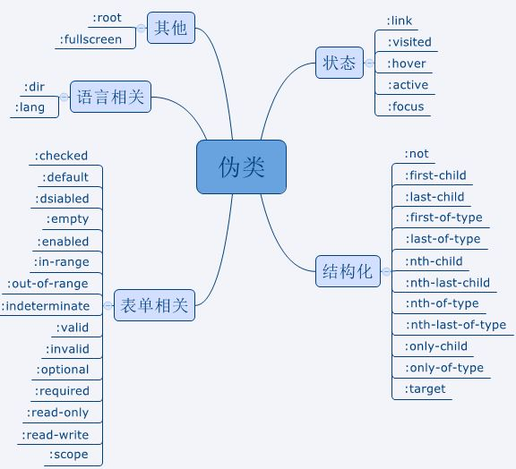
:link选择未访问的链接
:visited选择已访问的链接
:hover选择鼠标指针浮动在其上的元素
:active选择活动的链接
:focus选择获取焦点的输入字段
:not一个否定伪类，用于匹配不符合参数选择器的元素
:first-child匹配元素的第一个子元素
:last-child匹配元素的最后一个子元素
first-of-type匹配属于元素的首个特定类型的子元素的每个元素
:last-of-type匹配属于元素的最后一个特定类型的子元素的每个元素
:nth-child根据元素的位置匹配一个或者多个元素，它接受一个an+b形式的参数
1n+0，或n，匹配每一个子元素
2n+0，或2n，匹配位置为2、4、6、8…的子元素，该表达式与关键字even等价
2n+1匹配位置为1、3、5、7…的子元素、该表达式与关键字odd等价
3n+4匹配位置为4、7、10、13…的子元素
:nth-last-child:nth-last-child与:nth-child相似，不同之处在于它是从最后一个子元素开始计数的
:nth-of-type:nth-of-type与nth-child相似，不同之处在于它是只匹配特定类型的元素
:nth-last-type:nth-last-of-type与nth-of-type相似，不同之处在于它是从最后一个子元素开始计数的
:only-child当元素是其父元素中唯一一个子元素时，:only-child匹配该元素
:only-of-type当元素是其父元素中唯一一个特定类型的子元素时，:only-child匹配该元素
:target当URL带有锚名称，指向文档内某个具体的元素时，:target匹配该元素
示例1
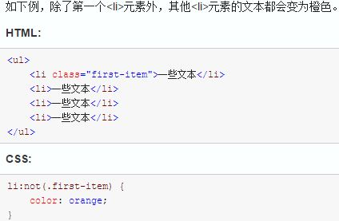
示例2
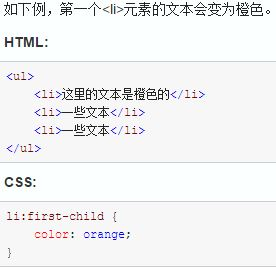
示例3
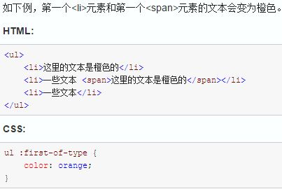
示例4
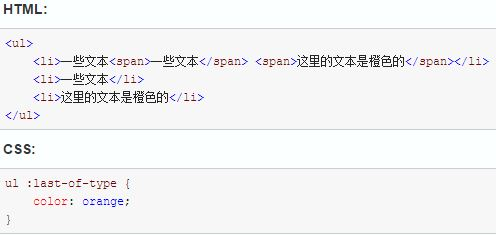
示例5
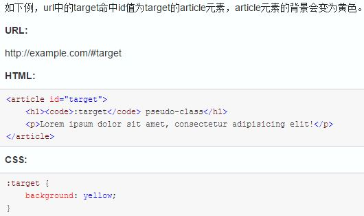
:checked:checked匹配被选中的input元素，这个input元素包括radio和checkbox
:default:default匹配默认选中的元素，例如：提交按钮总是表单的默认按钮
:disabled:disabled匹配禁用的表单元素
:empty:empty匹配没有子元素的元素。如果元素中含有文本节点、HTML元素或者一个空格，则:empty不能匹配这个元素
:enabled:enabled匹配没有设置disabled属性的表单元素
:in-range:in-range匹配在指定区域内元素
:out-of-range:out-of-range与:in-range相反，它匹配不在指定区域内的元素
:indeterminate当某组中的单选框或复选框还没有选取状态时，:indeterminate匹配该组中所有的单选框或复选框
:valid:valid匹配条件验证正确的表单元素
:invalid:invalid与:valid相反，匹配条件验证错误的表单元素
:optional:optional匹配是具有optional属性的表单元素。当表单元素没有设置为required时，即为optional属性
:required:required与:optional相反匹配设置了required属性的表单元素
:read-only:read-only匹配设置了只读属性的元素，表单元素可以通过设置“readonly”属性来定义元素只读
:read-write:read-write匹配处于编辑状态的元素。input，textarea和设置了contenteditable的HTML元素获取焦点时即处于编辑状态
:scope:scope匹配处于style作用域下的元素。当style没有设置scope属性时，style内的样式会对整个html起作用
示例1
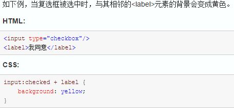
示例2
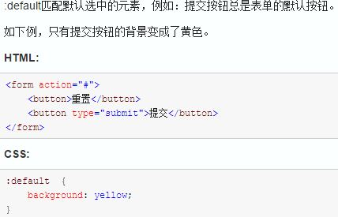
示例3
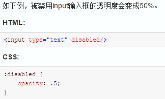
示例4
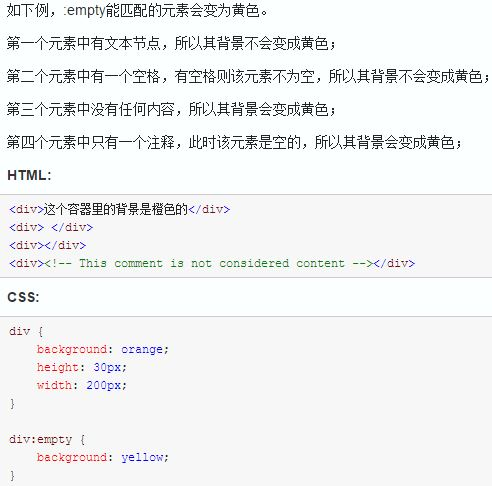
示例5
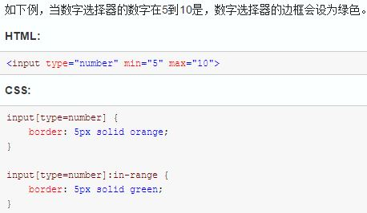
示例6
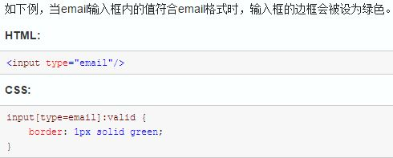
示例7
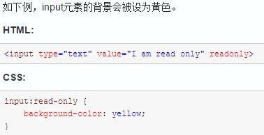
示例8
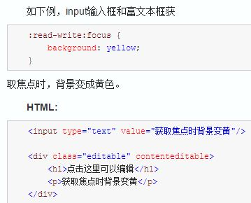
示例9
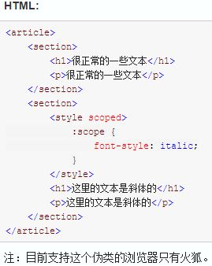
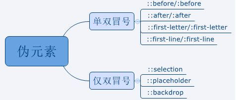
::before/:before:before在被选元素前插入内容。需要使用content属性来指定要插入的内容。被插入的内容实际上不在文档树中
::after/:after:after在被元素后插入内容，其用法和特性与:before相似
::first-letter/:first-letter:first-letter匹配元素中文本的首字母。被修饰的首字母不在文档树中。
::first-line/:first-line:first-line匹配元素中第一行的文本。这个伪元素只能用在块元素中，不能用在内联元素中
::selection::selection匹配用户被用户选中或者处于高亮状态的部分。在火狐浏览器使用时需要添加-moz前缀。该伪元素只支持双冒号的形式
::placeholder::placeholder匹配占位符的文本，只有元素设置了placeholder属性时，该伪元素才能生效
需要注意的是，除了Firefox是 ::[prefix]placeholder，其他浏览器都是使用 ::[prefix]input-placeholder
在一些浏览器中（IE10和Firefox18及其以下版本）会使用单冒号的形式
::backdrop::backdrop用于改变全屏模式下的背景颜色，全屏模式的默认颜色为黑色。该伪元素只支持双冒号的形式
示例1
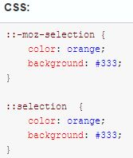
示例2
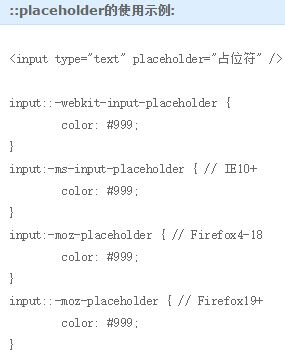
示例3
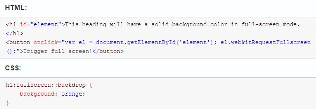